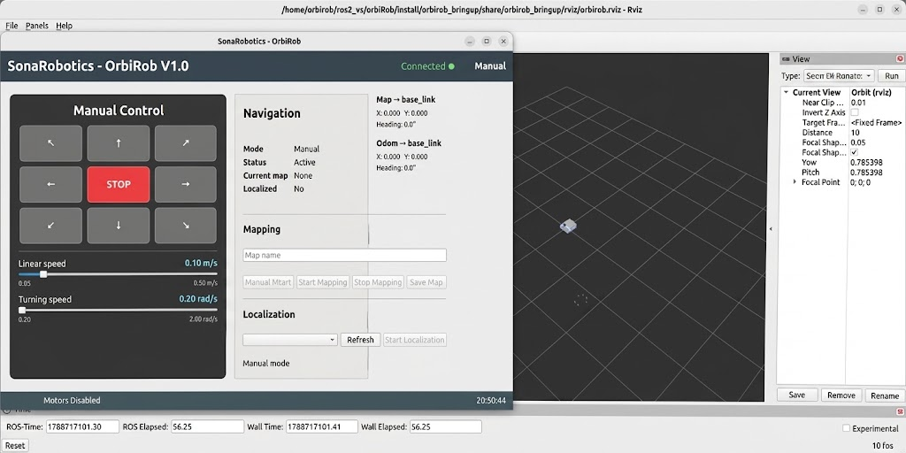

OrbiRob, robotun manuel olarak kontrol edilmesini, haritalama ve lokalizasyon işlemlerinin gerçekleştirilmesini ve navigasyon durumunun izlenmesini sağlayan bir grafik kullanıcı arayüzüne sahiptir. Arayüz üzerinden robotun hareketi doğrudan kontrol edilebilir, hareket hızları ayarlanabilir ve robotun mevcut çalışma durumu takip edilebilir.

Robotu açık ve temiz bir zemin üzerine yerleştiriniz. Yakında merdiven, kablo veya kırılabilir nesne bulunmadığından emin olunuz.
Manuel Kontrol bölümü, OrbiRob’un kullanıcı tarafından doğrudan sürülmesini sağlar. Arayüzde bulunan yön tuşları kullanılarak robot ileri, geri, sağa ve sola hareket ettirilebilir veya çapraz yönlerde ilerletilebilir. Ortadaki STOP düğmesi kullanılarak robotun hareketi hızlı bir şekilde durdurulabilir. Bu bölüm, özellikle haritalama öncesinde robotun ortam içerisinde manuel olarak hareket ettirilmesi ve robotun hareketlerinin doğrudan kullanıcı tarafından kontrol edilmesi amacıyla kullanılabilir.
Manuel kontrol sırasında OrbiRob’un hareket hızları arayüz üzerinden ayarlanabilir. Linear speed ayarı robotun doğrusal hareket hızını, Turning speed ayarı ise dönme hızını belirler. Kullanıcı, ilgili kaydırma çubuklarını kullanarak robotun hareket hızını çalışma koşullarına ve gerçekleştirilen göreve uygun şekilde değiştirebilir.
Navigation bölümü, OrbiRob’un yöngüdüm durumunun izlenmesini sağlar. Bu bölümde robotun çalışma modu, mevcut durumu, kullanılan harita ve konum durumu görüntülenebilir. Böylece kullanıcı, robotun hangi modda çalıştığını ve navigasyon için gerekli harita ve lokalizasyon bilgilerinin mevcut olup olmadığını arayüz üzerinden takip edebilir.
Mapping bölümü, OrbiRob’un bulunduğu ortamın haritasının oluşturulması ve yönetilmesi için kullanılır. Kullanıcı, harita için bir isim belirleyerek haritalama işlemini başlatabilir ve tamamlanan haritalama işlemini durdurarak kaydedebilir. Manual Start, Start Mapping, Stop Mapping ve Save Map düğmeleri kullanılarak haritalama sürecinin farklı aşamaları kontrol edilebilir. Oluşturulan haritalar daha sonra lokalizasyon ve navigasyon işlemlerinde kullanılabilir.
Localization bölümü, OrbiRob’un bilinen bir harita üzerindeki konumunun belirlenmesi ve lokalizasyon işleminin başlatılması için kullanılır. Kullanıcı, mevcut haritalar arasından seçim yapabilir ve Refresh düğmesi ile kullanılabilir haritaları güncelleyebilir. Seçilen harita üzerinden Start Localization düğmesi kullanılarak lokalizasyon işlemi başlatılabilir. Bu işlem, robotun daha önce oluşturulmuş bir harita üzerinde konumunu belirleyerek navigasyon için gerekli konum bilgisini sağlamasına olanak tanır.
Arayüzün üst bölümünde OrbiRob’un bağlantı durumu görüntülenir. Bağlantının aktif olması durumunda Connected göstergesi üzerinden robot ile arayüz arasındaki iletişim durumu takip edilebilir. Ayrıca arayüzde robotun farklı koordinat sistemleri arasındaki konum ve yönelim bilgileri görüntülenerek robotun mevcut durumunun izlenmesi sağlanır.
Gösterimler robotu tanımak amacıyla hazırlanmıştır. Özel davranışlar için robotu programlayabilirsiniz.